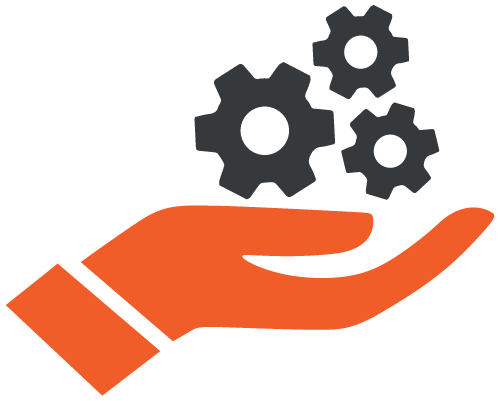

Continuous Integration
Continuous integration is a software development practice where developers regularly merge their code changes into a central repository, after which automated builds and tests are run. The key goals of continuous integration are to find and address bugs quicker, improve software quality, and reduce the time it takes to validate and release new software updates. All this translates into an update to date product which keeps itself ahead of all the competition around it.
Continuous Delivery
Continuous delivery is a software development practice where code changes are automatically built, tested, and prepared for a release to production. It expands upon continuous integration by deploying all code changes to a testing environment and/or a production environment after the build stage. This process makes sure that the product is ready to meet all real world problems without any hiccups. When continuous delivery is implemented properly, developers will always have a deployment-ready build artifact that has passed through a standardized test process.
Micro services
The micro-services architecture is a design approach to build a single application as a set of smaller services. Each individual service runs in its own process and communicates with other services through a well-defined interface using a lightweight mechanism, typically an HTTP-based application programming interface (API). Micro-services are built around business capabilities and specific client requirements; each service is scoped to a single purpose. One can use different frameworks or programming languages to write a micro-service and deploy them independently, as a single service, or as a group of services.

Configuration Management
Developers and system administrators use code to automate operating system and host configuration, operational tasks, and more. The use of codes makes configuration changes repeatable and standardized, which makes the entire stable and predictable to any unforeseen problems. It frees the developers and systems administrators from manually configuring operating systems, system applications, or server software from time to time.
Monitoring & Logging
Organizations monitor the predefined metrics and logs to see how the application’s and infrastructure’s performance impacts the experience of the product’s end user. By capturing, categorizing, and then analysing data and logs generated by the applications and from the infrastructure, vested organizations understand how changes or updates impact users, shedding insights into the root causes of problems or unexpected changes. Active monitoring becomes increasingly important as the services must be available 24/7 with any interruptions and as the application and infrastructure update’s frequency increases. Creating update alerts or performing real-time analysis of this data also helps organizations more proactively monitor their services.
Communication and Collaboration
An increased intra department communications and collaborations in an organization is one of the key cultural aspects of DevOps. The use of DevOps based tooling and automation of the software delivery process establishes a shared collaboration by physically bringing together the workflows and responsibilities of the development and operations. Building on top of that, these teams use chat applications, issue or project tracking systems, and wikis. This helps to speed up the communication across developers, operations, and to even other teams such as the marketing or sales departments, allowing all parts of the organization to align more closely on goals and projects together.
DevOps Consulting Services
Storin brings together the top talents in the DevOps, Continuous Integration, Continuous Delivery and Deployment areas, with years of hands-on experience in the Cloud environment. We are one of the top DevOps vendors at optimizing cloud implementations, minimizing costs while improving reliability, scalability and security of the applications across the board. By automating the developing, testing, and deployment processes we are able to deliver well-tested, high-quality applications rich in features and functionalities in significantly less time.

DevOps Automation & Consulting Services
DevOps is the fastest way to get your infrastructure in a competitive, consistent, highly scalable format which will be a formidable product for years to come. The optimum mix of Agile and DevOps practices means that we deliver on time, as we value the given time frame and provide a very accurate time estimate. Our DevOps integration process starts with an assessment of existing Services and strategy to come up with a list of areas for improvement and the tools, required to successfully inject the DevOps Strategy.

Hire DevOps Engineers
From DevOps Engineers to Cloud Developers and Network Engineers, we have solution specific DevOps talent that one would need to develop and deploy the most challenging products in a short period of time. Whether to start the transition to a DevOps cantered environment or to build a professional DevOps team, hire experienced and seasoned DevOps engineers from Storin.

Continuous Integration & Delivery
In a software development cycle, continuous integration (CI) is the method of merging all developer’s updated codes of a existing data to a shared repository several times a day. This method of frequently integrating one’s new or changed code with the existing code repository, this code is again put through testing and quality tests. The method results in a up to date product with respect to the needs of the user and the market’s current taste. Continuous delivery (CD) is a software development approach where teams produce and develop software in short static periods, making sure that the software can be merged with the existing product at any given time. The main aim of this method is to build, test, and release software updates faster and more frequently.

Deployment services
The final step in the software development cycle, and also the critical part of the whole cycle. Our deployment services makes sure that the risks associated with the updates are minimal as the code changes are small in nature when compared with the overall size of the existing program. This regular updates makes sure that the inefficiencies associated with the products are removed, and better options are added to the program.

Continuous Monitoring and Support
Our continuous Monitoring and Support service is a cost-effective and the most secure way to monitor and maintain maximum uptime at any remote server location. The remote monitoring of the client systems and red-flagging of potential issues before they become an issue to regular cycle of processing, is a key component in our managed services. Our 24/7 Monitoring and Support services offers proactive monitoring and alerting keeps the system reliable with the least downtime. Our automated 24/7 support process provides network and server health monitoring and proactive alerts allowing us to fix any potential issues before they have a negative effect on your business.

Security
Companies using DevOps gives importance to the security of products and services, to be thorough about the security multiple testing procedures are employed such as vulnerability and penetration testing. Automated testing techniques are used to test the performance, load capacity etc., all this precautions and testing makes for a quality product of the highest calibre.
How DevOps helps your Business
 Eliminates bottlenecks
Eliminates bottlenecks
DevOps eliminates bottlenecks, both expected and the unexpected as the developers and deployment teams work in tandem and by complementing the individual tasks on a shared platform. This means a reduced time to develop and deploy, adapt to changing markets and customer needs faster, and grow more efficient at driving business results. The DevOps model enables your developers and operations teams to achieve these results.
Developers and operations teams collaborate closely, share many responsibilities, and combine their workflows. This reduces inefficiencies and saves time, while innovation fosters as the ideas can be shared easily and its practicality in the real world scenario can be easily simulated. DevOps inadvertently makes innovation as part of the process which cannot noticed on other practises.
Increase the frequency and pace of releases so you can improvise and improve your product faster. Continuous Integration and Continuous Delivery are practices that automate the software release process, from build to deploy. This means a competitive product regardless of time and competition.
The costs associated with the product development and deployment is vastly reduced as the product is always ahead of the competition all the time. Compared with the traditional practices of software development and deployment, DevOps soars ahead with its scalability and reliability. Use practices like continuous integration and continuous delivery to test that each change is functional and safe. Monitoring and Logging practices help you stay informed of performance in real-time.
Operate and manage your infrastructure and development processes at scale. DevOps Automation and its impeccable consistency help to manage complex or changing systems efficiently and with reduced risk.
The testing practices followed by DevOps means that software is out through every benchmark of testing from to performance to security. Following DevOps practices also means that the testing process is partnered with the development teams so as to make appropriate changes if required. One can adopt a DevOps model without sacrificing security by using automated compliance policies, fine-grained controls, and configuration management techniques.
Choose Storin, your DevOps Partner
As the importance of continuous product delivery is increasing, the demand for DevOps service providers are on a rise. Businesses are looking for DevOps consulting firms who can deliver products faster. Here are some of the benefits of DevOps Services Company:
We are one of the top DevOps service providers offering best DevOps Practices.
Our DevOps support team can help increase the value of your business services or products. Our shorter release cycle of products helps us to respond to changes in real time and deliver good user experience. We speed up the delivery by identifying and discarding irrelevant and time taking processes.
DevOps Tools & Technologies
Increase the quality, efficiency and speed of software applications and services with Storin DevOps engineers. With the right DevOps tools & technologies, convert your obsolete software and infrastructure management processes.
At Storin, our DevOps support team help you in frequent, rapid release cycles to minimize the level of bottlenecks which might form in your delivery pipeline. Our team will help you in fully automated deployment using Continuous Integration (CI) and Configuration Management tools to control entire application infrastructure.
Companies that incorporate DevOps practices get more done, plain and simple. They deploy code up to 30 times more frequently than their competition. And less than 50% of their deployments fail. An increase in overall efficiency as a result of incorporation of a DevOps team has imparted the word DevOps with a cult like status.
A Case Study on DevOps: The Transition
Storin DevOps consultants works closely with the customer development and deployment team and understand their existing process, prepared DevOps adoption plan, worked with the team to understand the advantages of the transition, given proper training which needed, helped them in moving to the DevOps culture.
Read More...